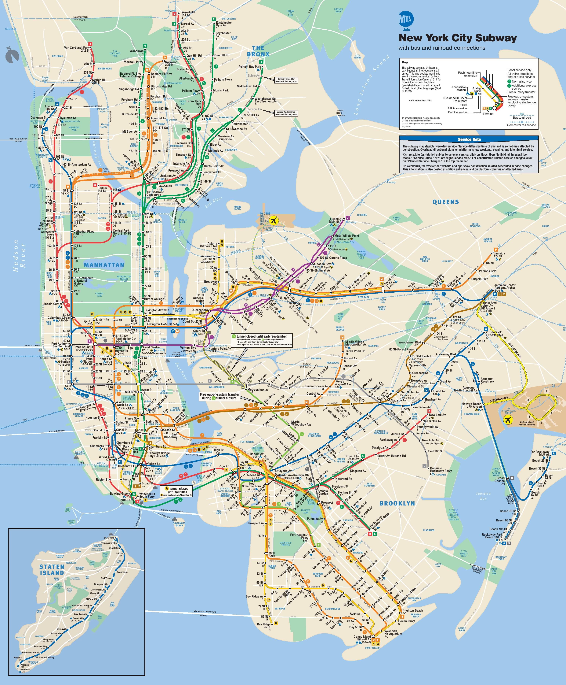
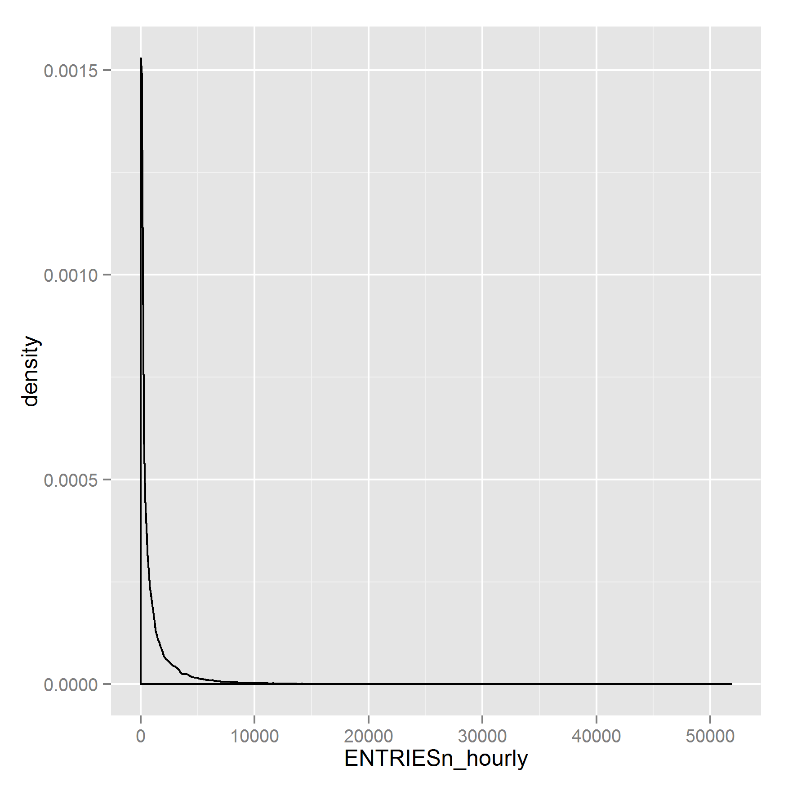
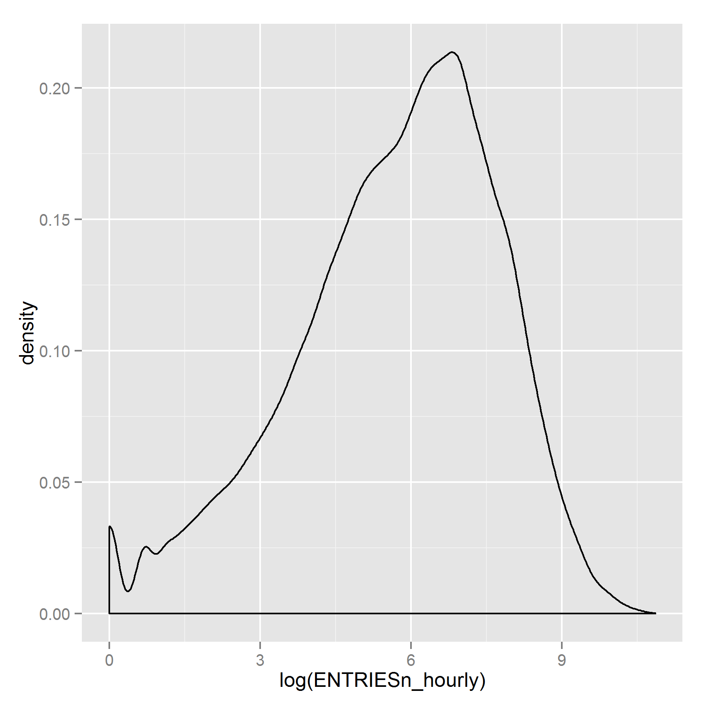
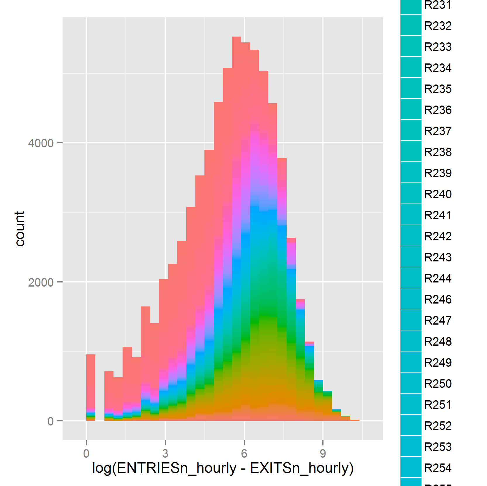
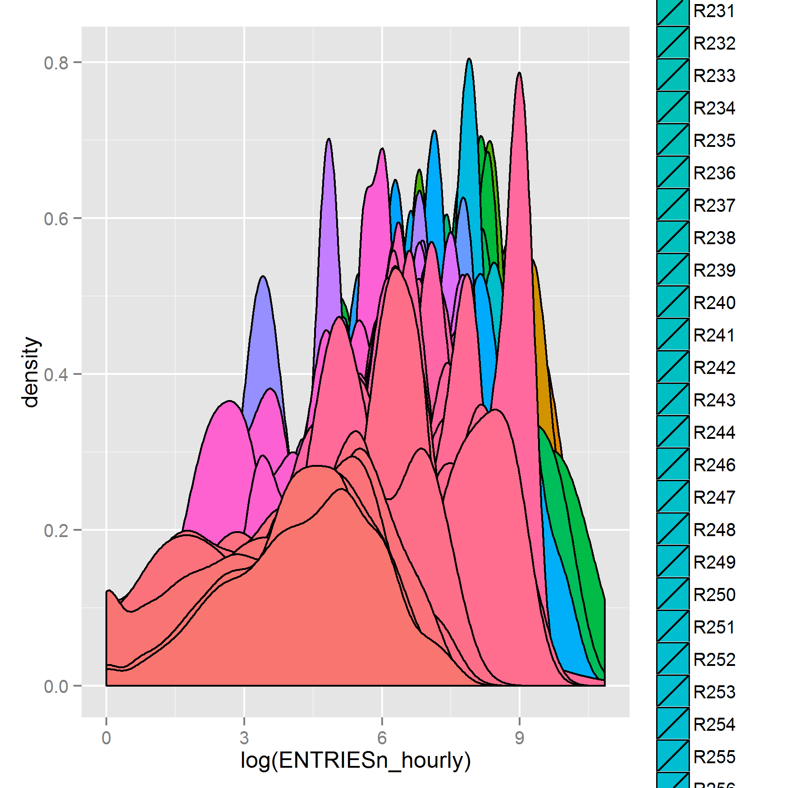
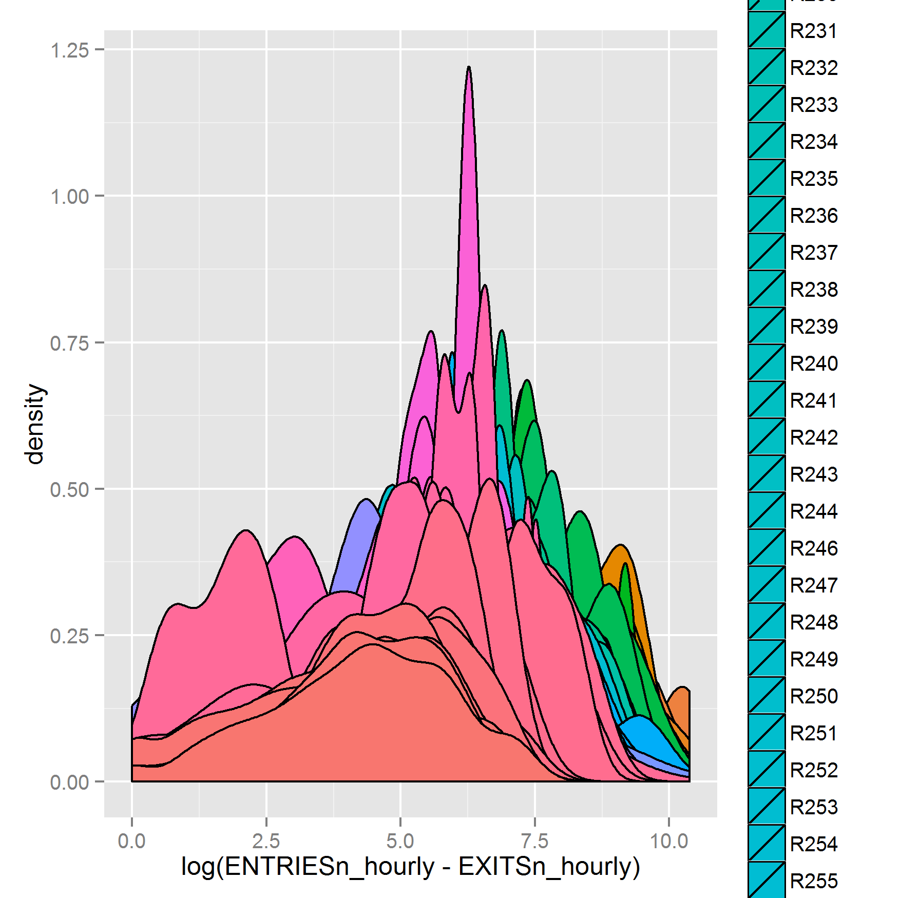
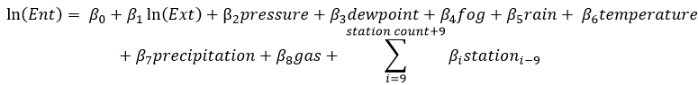
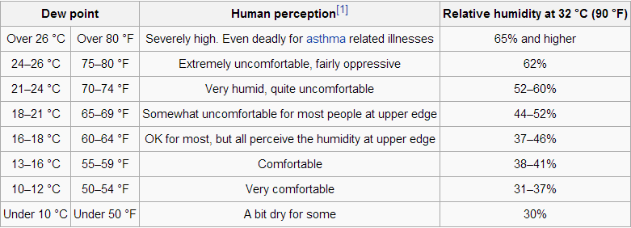

Personal info
Hi, my name is Josh and I am an aspiring Data Analyst. I have a B.S. in Mathematics and a B.S. in Economics from Michigan State University where I graduated from the Michigan State Honors College.
You can reach me at 248-240-7095 or at My Email Address
Here is my Economics Senior Thesis on a similar data set.
Introduction
As a part of a course I have recently taken online (Udacity 359: Intro to Data Science), I was tasked at looking at different sets of data such as public transportation data from the Metropolitan Transportation Authority which covers public transit in New York City.
I designed this project in mind to look at the impact of various aspects of weather, as well as gas prices on entries into the MTA system. The question being does inclement weather cause statistically significant number of people to avoid the MTA system. In addition, does the price of gas have an impact as well on the number of MTA entrants? I believe that this questions are answered adequately the regression results.
Background

Remote Unit/Control Area/Station Name Key
If you were unfamilar with the MTA or it's structure this should give you some context. The map above is the New York City subway system with various lines and stops. Overall there are 552 stations and the Remote Unit xls file linked above gives a key of all of the stations.
Summary Statistics.
Here are some summary statistics from the available data.
Variable n Mean S.D. Min .25 Mdn .75 Max
-------------------------------------------------------------------------------
ENTRIESn_hourly 131951 1095.35 2337.02 0.00 39.00 279.00 1109.00 51839.00
EXITSn_hourly 131951 886.89 2008.60 0.00 32.00 232.00 847.00 45249.00
meandewpti 131951 52.70 9.94 31.00 45.00 54.00 60.00 68.00
meanpressurei 131951 29.97 0.13 29.64 29.91 29.96 30.05 30.27
meanwindspdi 131951 5.54 1.98 1.00 5.00 5.00 6.00 12.00
meantempi 131951 64.27 6.57 55.00 60.00 63.00 68.00 78.00
gas 131951 4.04 0.04 3.94 3.98 4.05 4.07 4.07
-------------------------------------------------------------------------------
The data here is taken from the Udacity 359: Intro to Data Science course, who had taken this data from MTA. The gas data was taken from the US Energy Information Agency. Respectively the variables stand for hourly entries at a turnstile, hourly exists from a turnstile, the means of dew points, pressure, wind speed and temperature and lastly the average weekly price of gas in that area.
Here we can see some interesting parts of the data at a first glance. Entries and exits have an odd distribution given that the mean minus the normal standard deviation for each would give us a negative number. Intuitively this means that there are much more instances of lower numbers of riders per turnstile per hour but there exists a smaller but still non-negligible number of instances where a high number of people are going through a turnstile per hour. In addition, the number of exits are smaller on average than the entries as the MTA is not as interested in this data and in some areas passengers may be able to use exists that do not record this data.
Looking at the weather data we can see that this data looks much more normal than our entries and exit data does. This is, as we would expect it given that the data was captured all from the same month here.
One of the issues that I did wind up having with my gas data was that I was not able to find data that was on that minute of a timescale and from areas in the immediate surrounding area of the particular station which would have been ideal. Instead, what I was able to find was the weekly gas data for the region, which I then imputed for the matching weeks, which is not an ideal substitute. Adding on to this that statistical variation in the data. This data though does give similar results that I had obtained in writing my Economics Senior Seminar Thesis where I discussed the impact of petrol taxes on rail ridership in the Eurozone. In addition, the economic theory comparing public and private transportation is very well established and my results do agree with it. Overall, while not having the most quality data available for this portion of the analysis I am very confident of my results given past work by others and myself in economics and data analysis. If one wanted a more robsut result of this in particular I would recommend looking at larger time scales of weeks if not months as I did previously.
Data Visuals.
Diving a bit further into the hourly entires number I can see that concerns are founded but are less concerning as I continue to look at the data.

Looking at simply the plain data for entries here we see what I had described in the sections above.

But if we look instead at the numbers after taking the log of Entries we can see a picture of more normal looking data.

Breaking down data by fills too also produces data that looks very normal by station. This is net entires.

And perhaps looking at individual distributions overall gives the most clear visual picture. Above are the entries by station, below are net distributions also by station.

Stata Regression.
. reg lnEnt lnExt meanpressurei meandewpti fog rain meantempi precipi gas stat*
Source | SS df MS Number of obs = 115254
-------------+------------------------------ F(471,114782) = 409.54
Model | 287059.059 471 609.467217 Prob > F = 0.0000
Residual | 170815.611114782 1.4881742 R-squared = 0.6269
-------------+------------------------------ Adj R-squared = 0.6254
Total | 457874.67115253 3.97277876 Root MSE = 1.2199
-------------------------------------------------------------------------------
lnEnt | Coef. Std. Err. t P>|t| [95% Conf. Interval]
--------------+----------------------------------------------------------------
lnExt | .5661702 .0027154 208.51 0.000 .5608481 .5714923
meanpressurei | -.139012 .0301263 -4.61 0.000 -.198059 -.0799649
meandewpti | -.0019518 .000694 -2.81 0.005 -.003312 -.0005916
fog | .0283974 .0119282 2.38 0.017 .0050183 .0517766
rain | -.0212086 .0112887 -1.88 0.060 -.0433343 .0009172
meantempi | -.0057353 .0010376 -5.53 0.000 -.007769 -.0037016
precipi | -.0036713 .010956 -0.34 0.738 -.0251449 .0178023
gas | -.8527361 .1806797 -4.72 0.000 -1.206866 -.4986066

Now on to the juicy stuff, the actual statistical regressions. As you can see in the regression equation image I chose to represent the equation in mostly log-level format. I think this is the best choice as the variables used in this regression have an intuitive understanding to them. If I talk about the temperature going up 5 degrees Farenheit or the price of gas going up 10 cents per gallon this is something that everyone can see in their minds eye. With the hourly entrants that impact is mostly clearly seen by a percent change as the number of people entering can vary so widely. If I were to tell you that 100 more people would be entering a turnstile during the dead of night that's vastly different than if I'm talking about a jam packed train during morning rushhour. If I were instead to tell you that I expected a 2% increase on that train that would make sense relative to the passengers on there.
To start things off I suppose we should talk about R^2. There would be no point in talking about this regression if this value was low and for the purposes of this analysis this value is actually quite high. This shouldn't be a surprise as one would expect that the number of entrants are conditional upon things like weather, the number of people exiting and gas prices which represent a substitute good
The next thing that I wasnted to talk about in general is that most of these variables in my regression are statistically significantly different from 0 and thus we can reject the null hypothesis on almost all of them. The two exceptions being rain, which is statistically significant at the 10% level but not at the 5% level and preciptation which is not statistically significant at all.
Exits being in log form along with entrants means that for every 1% increase in exits we would expect a .5661702% increase in entrants.
I'll admit that I don't know a lot about air pressure but luckily if we just read the data and distibutions we should make sense of changes to air pressure without worrying about what air pressure itself means. If I were to say that today we have an increase in pressure equavalent to one standard deviation, 0.13, from the mean this should make sense to most people. This part of the regression is in log-level format so if we are taking 0.13 to be our change in units then we need to multiply this by the coefficent from mean pressure in the regression and then multiply by 100 to get the expected percent change in the number of entransts. After performing this calculation we arrive at -1.81%. In other words mean pressure changing by one standard deviation will result in an almost 2% decrease in the number of riders for that day.

While I don't know much about air pressure, dew point is something that I have seen and used before. Dew point is directly related to relative humidity as the above chart shows, the higher the dew point is the more humid it is, until the dew point is the tempreature at which point you are at 100% relative humidity. One can think of dew points as a form of absolute measure of humidity as opposed to relative. Dew points can never be above the temperature as then the air would release moisture in the form of condensation such as when you see morning dew outside early in the morning.
All that being said about dew points if we now look at the regression we see that by nature of it being log level regression that if we raised the dew point by about the standard deviation, 10 degrees, then we'll see a decrease in riders by 2%.
Fog here is an indicator variable, as in it's only either 1 or a 0 in the dataset. So by the regression if we go from a non-foggy day to foggy day we should expect a 2.84% increase in number of riders. This is partially curious in that most other non-ideal weather situation thus far have soon a decrease in riders and not an increase. I think the logic is that foggy days don't really impede you will or want to go outside, it just affects visability for longer distances and thus this is a slight detriment to want to travel by car but not travel overall so some that were on the border between travel methods are pushed to use the MTA subway. In micro-economic terms if we were to look at this from a utility perspective then your utility gotten from going outside and doing whatever activity it is that you need to do isn't decreased from the fog but the utility gotten from traveling by methods that involve traveling at high speeds with limited visability do. This is to say that if you lived in the area and wanted to go see a movie, the fog isn't a hiderance to your ability to see it or enjoy it but you'd rather take the subway than the taxi.